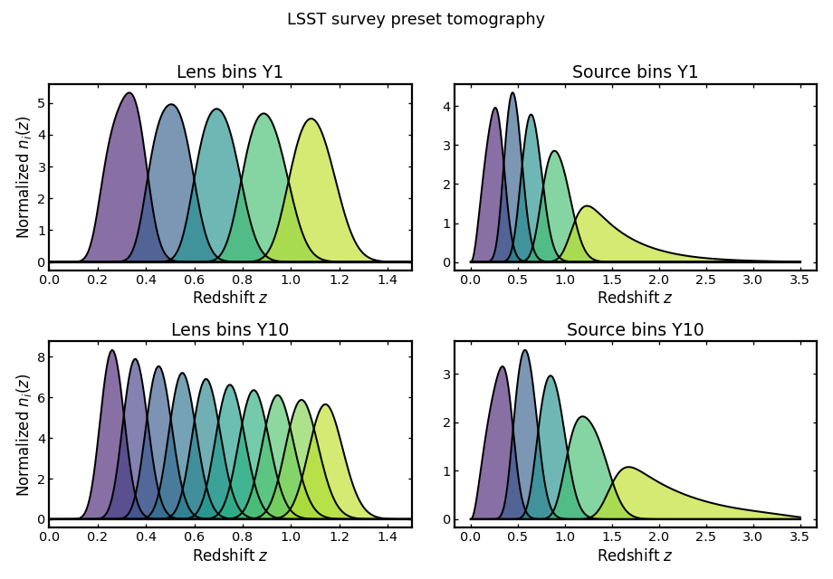
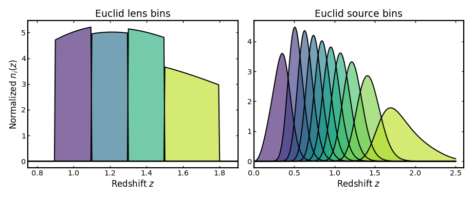
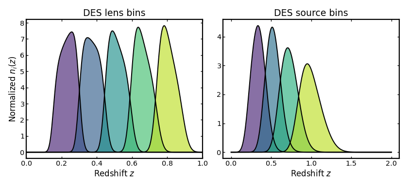

Survey presets#
Survey presets#
Binny allows survey configurations to be stored as YAML survey presets. A preset groups together the parent redshift distribution, tomographic binning scheme, uncertainty model, and optional survey metadata such as footprint or galaxy density.
Using a YAML preset makes it easier to keep survey configurations consistent across forecasts, examples, and analyses.
LSST survey preset#
The example below shows the LSST survey preset included with Binny. It defines tomographic configurations for lens and source samples for both year 1 and year 10.
Visualizing the preset#
The figure below loads the LSST preset directly, constructs the corresponding tomographic bins, and plots the resulting redshift distributions for lens and source samples in years 1 and 10.
(Source code, png, hires.png, pdf)
{kind=link}
{kind=link}
{kind=link}

Euclid survey preset#
Binny can also be used with a Euclid-inspired survey preset containing a photometric source sample and a spectroscopic lens sample.
In this simplified preset, the source sample follows the commonly used Euclid weak-lensing redshift distribution with 10 explicit tomographic bin edges, while the lens sample is represented as a spectroscopic sample over the Euclid clustering redshift range.
Visualizing the preset#
The figure below loads the Euclid preset and visualizes the resulting spectroscopic lens bins and photometric source bins.
(Source code, png, hires.png, pdf)
{kind=link}
{kind=link}
{kind=link}

DES survey preset#
Binny also includes a simplified configuration inspired by the tomographic setup used in the Dark Energy Survey (DES).
Compared to LSST, DES covers a smaller area of the sky and has lower galaxy number densities, resulting in fewer tomographic bins and a shallower redshift reach.
Visualizing the preset#
The figure below loads the DES preset and visualizes the resulting lens and source tomographic bins.
(Source code, png, hires.png, pdf)
{kind=link}
{kind=link}
{kind=link}
